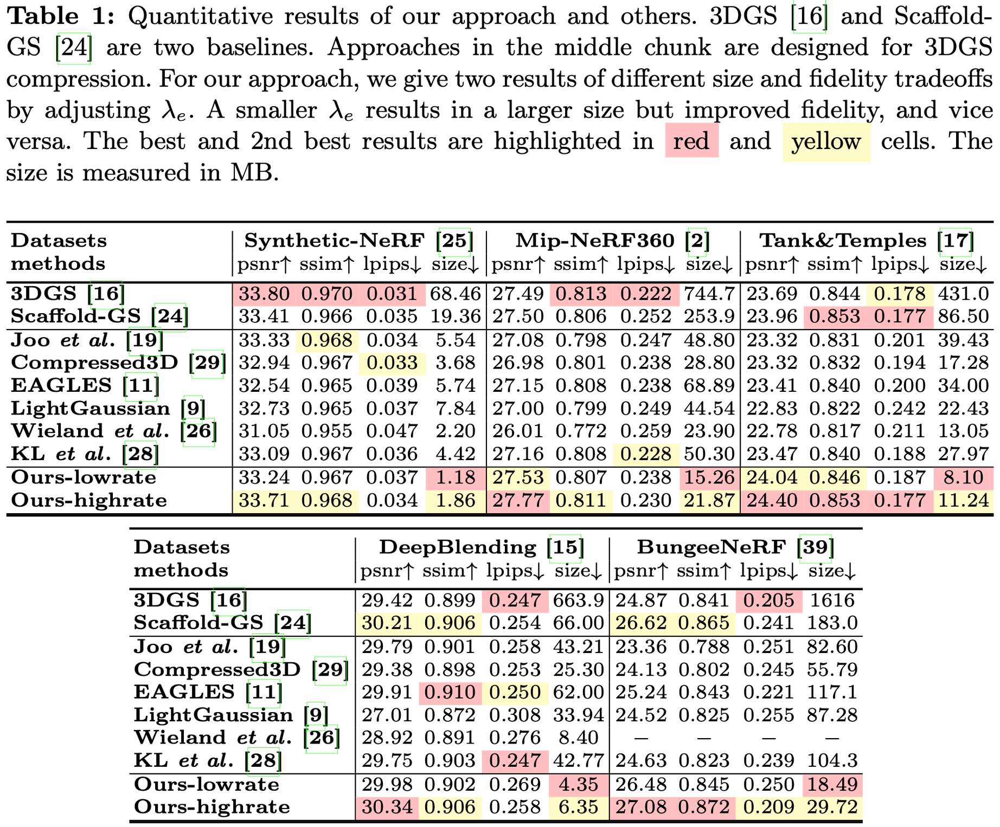
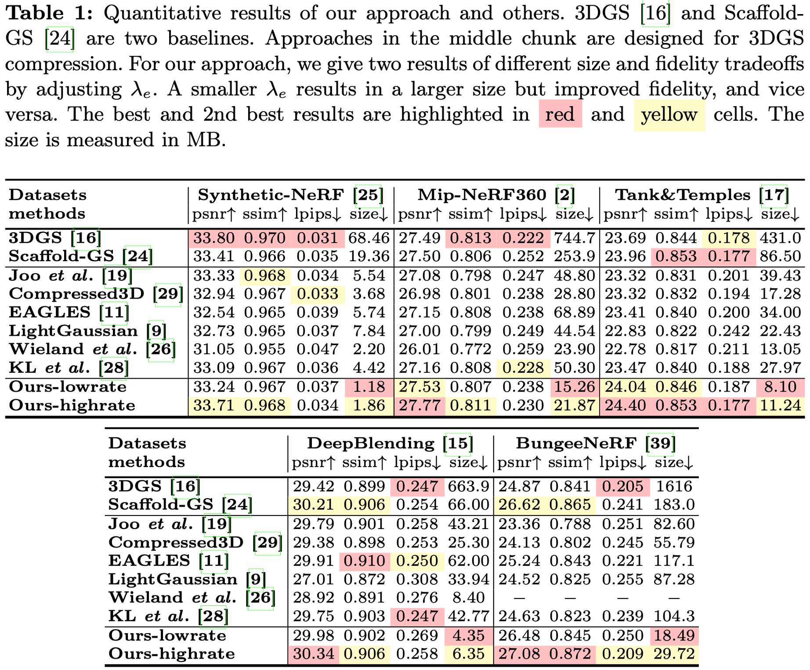

Our work is the pioneer to explore context-based compression for 3DGS representation, resulting in a remarkable size reduction of over 75X compared to vanilla 3DGS, while simultaneously improving fidelity, and achieving over 11X size reduction over SOTA 3DGS compression approach Scaffold-GS.
3D Gaussian Splatting (3DGS) has emerged as a promising framework for novel view synthesis, boasting rapid rendering speed with high fidelity.
However, the substantial Gaussians and their associated attributes necessitate effective compression techniques. Nevertheless, the sparse and unorganized nature of the point cloud of Gaussians (or anchors in our paper) presents challenges for compression. To address this, we make use of the relations between the unorganized anchors and the structured hash grid, leveraging their mutual information for context modeling, and propose a Hash-grid Assisted Context (HAC) framework for highly compact 3DGS representation.
Our approach introduces a binary hash grid to establish continuous spatial consistencies, allowing us to unveil the inherent spatial relations of anchors through a carefully designed context model.
To facilitate entropy coding, we utilize Gaussian distributions to accurately estimate the probability of each quantized attribute, where an adaptive quantization module is proposed to enable high-precision quantization of these attributes for improved fidelity restoration. Additionally, we incorporate an adaptive masking strategy to eliminate invalid Gaussians and anchors.


 
